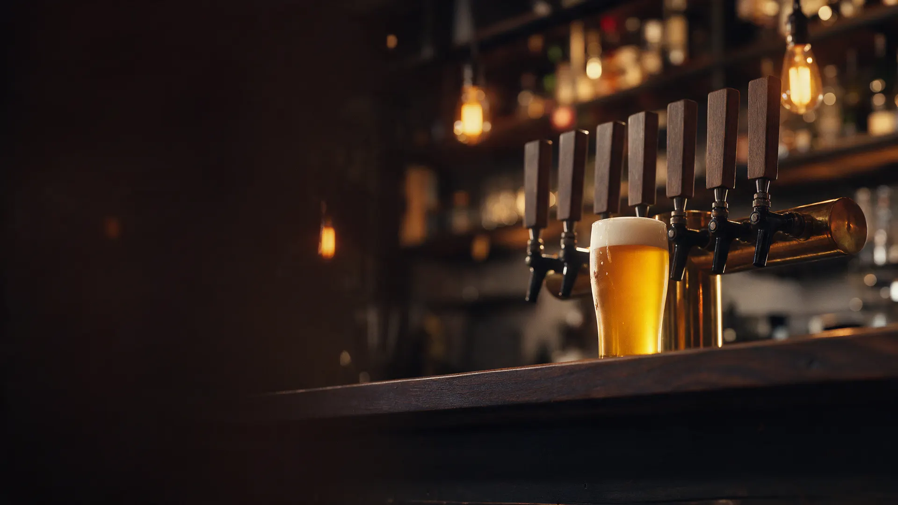
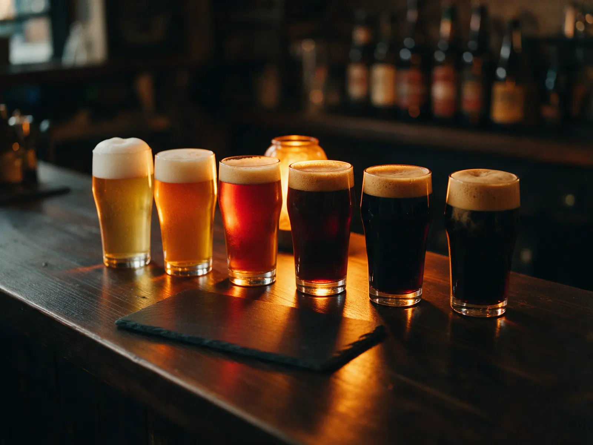
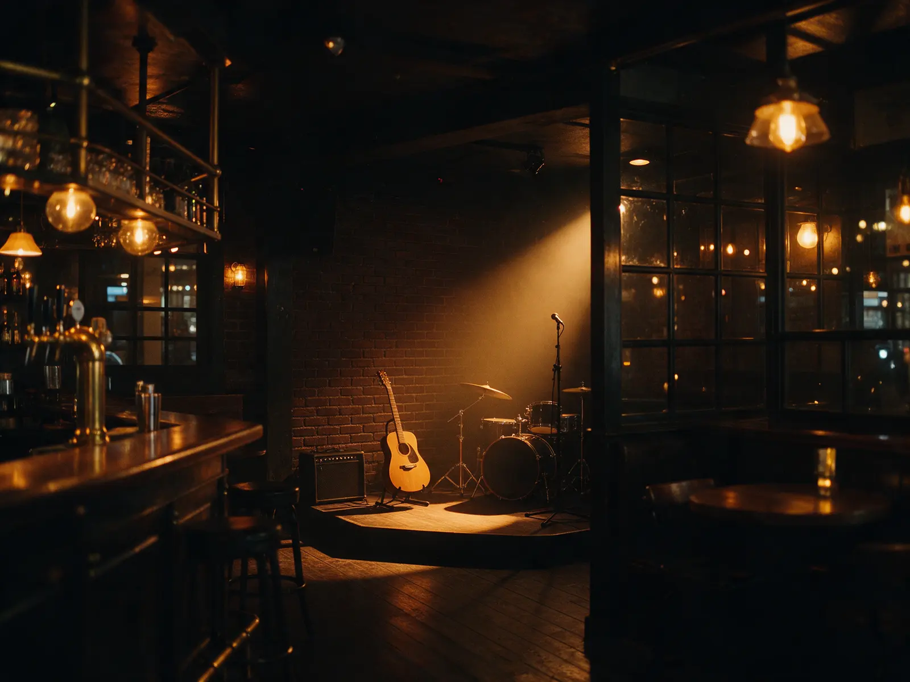
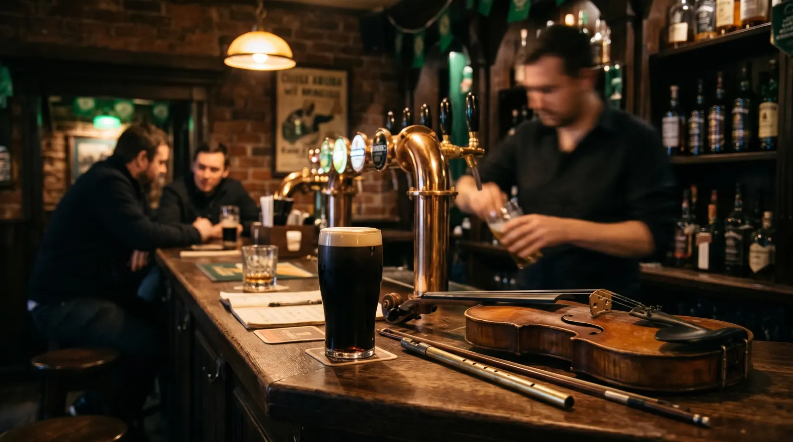

Сегодня в кране – шесть сортов. Вечером – живая музыка
Бар в Краснодаре. Что наливаем на этой неделе и кто выходит на сцену – смотрите здесь, до того как соберётесь.
Пиво этой недели
Приходишь – а пива уже нет? Список обновляется раз в неделю, поэтому то, что вы видите ниже, мы наливаем сейчас.
- 1Золотой БерегСветлый лагер4,6 %290 ₽
- 2Янтарный ЛисЯнтарный эль (Amber Ale)5,2 %340 ₽
- 3Хмельная ГрозаIPA6,4 %380 ₽
- 4Медный КолоколКрасный эль5,5 %350 ₽
- 5Чёрный БархатСтаут6,0 %370 ₽
- 6Пшеничный ТуманНефильтрованное пшеничное5,0 %320 ₽
Цена – за 400 мл. Если сорт закончился раньше срока, мы уберём его из списка в тот же день.


Афиша: кто играет
Ближайшие выступления. Дата, время и вход – сразу в строке, чтобы решить до того, как выйдете из дома.
- 20 ноя · птСеверный Ветер20:00
- 21 ноя · сбТрио «Старый Паром»21:00
- 27 ноя · птThe Рыжие Лисы20:30
- 28 ноя · сбМедный Тон21:00

Зайти и остаться
Три вещи, которые мы обещаем на сайте и держим в зале.
- Список – свежийПиво и афишу правим раз в неделю. Что на сайте, то и в кране, и на сцене.
- Музыка – по афишеДата, группа и время указаны заранее, вход – платный или свободный – тоже.
- Адрес – на видуЧасы и дорога – в начале и в конце страницы, не нужно искать по соцсетям.
Отзывы гостей
«Зашли на кружку, а остались до закрытия. Список пива на сайте не врёт: что написано, то и в кране. Взяли стаут – бархатный, пена плотная.»
«Приятный бар, где можно поговорить: музыка живая, но не оглушает. Бармен подсказал сорт под мой вкус, не навязывая дорогое.»
«Были в пятницу на выступлении. Скрипка и гитара вживую – отличная атмосфера. Приходите пораньше, места быстро заканчиваются.»
Заходите сегодня
Адрес, часы и дорога – ниже. Если хотите занять стол, позвоните заранее.
Пиво и афиша – на этой странице выше, обновляются раз в неделю.